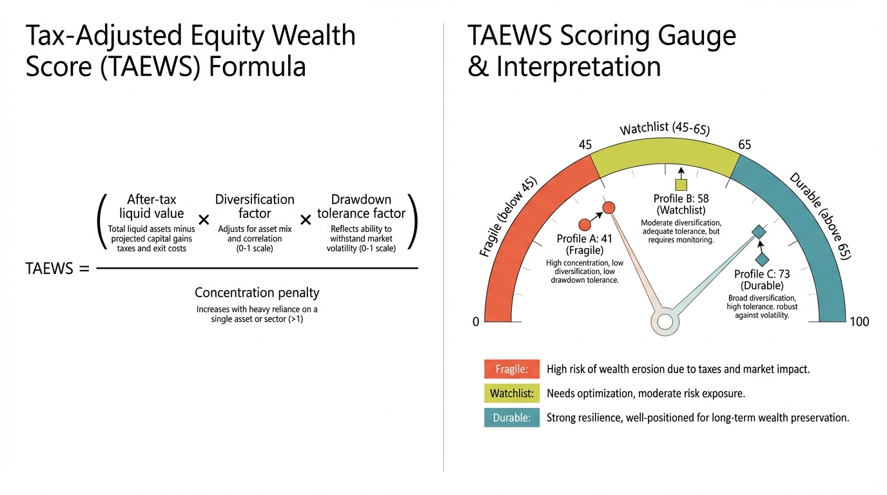

The Equity Compensation Trap: When Stock-Based Wealth Does Not Survive The Tax Year
Employer equity can be a powerful wealth engine. However, it creates concentrated after-tax risk when grants are treated as net wealth instead of contingent exposure.
For many tech and corporate professionals, RSUs, ISOs, and ESPP plans drive the largest wealth acceleration. They also concentrate risk because career income, unvested compensation, and invested capital often rely on the same company. This wealth illusion occurs when households value grants at gross market price but fail to model tax realization, concentration limits, and downside correlation. This oversight transforms deferred compensation into a speculative position lacking the structural safeguards of diversified portfolios.

Three Common Profiles
Early employee with ISOs
Upside can be large, but exercise timing and AMT exposure often create liquidity stress. If secondary markets are thin and lockups persist, modeled wealth may exceed realizable wealth for extended periods. Early exercise strategies require careful cash flow planning to avoid triggering AMT liabilities without liquidity events. The exercise-and-hold approach magnifies both potential rewards and irreversible tax consequences.
Mid-career RSU recipient
RSUs are operationally simpler but still create concentration risk when vesting schedules and voluntary holds accumulate single-stock exposure. Tax withholding rarely matches final liability in volatile markets. Many recipients underestimate the compounding effect of multi-year vesting, where each new grant adds to existing concentration without automatic rebalancing. The psychological barrier against selling "free shares" often overrides rational diversification.
ESPP participant
Discounted purchase plans are efficient only if sale discipline is strict. Without discipline, repeated accumulation turns a perk into concentration risk. The lookback provision and discount create an immediate paper gain that encourages holding beyond the qualification period. Participants should view ESPP as a periodic cash conversion opportunity rather than a primary investment vehicle.
The Triple-Correlation Problem
When one company sets salary, bonus, and portfolio exposure, adverse events compound. A stock drawdown can coincide with layoffs and reduced future grants. This turns apparent diversification across cash and equity into a single correlated risk cluster. The correlation extends to human capital, where specialized skills may have reduced transferability during industry downturns. This creates a risk profile where losses accelerate during the conditions when financial resilience is most needed.
Tax Layer: Where Silent Erosion Happens
Households often track grant-date value and skip tax-path modeling. Real outcomes depend on vesting schedules, exercise timing, holding periods, AMT, withholding mechanics, and jurisdiction. Poor timing can produce large tax payments against declining asset values. The result is forced sales and avoidable wealth leakage. Supplemental tax obligations frequently surprise recipients who assume standard withholding covers all liabilities, particularly when exercising large option blocks or receiving large RSU vesting events during price volatility.
Core rule: Do not value employer equity at gross price without after-tax and concentration adjustments. Implement systematic discounting that reflects liquidation costs and correlation penalties.
Tax-Adjusted Equity Wealth Score (TAEWS)

TAEWS combines four weighted controls: after-tax realization confidence, concentration ratio versus policy cap, liquidity runway independent of employer equity, and pre-committed rebalance discipline. A low score means household solvency is too dependent on one company. The scoring system should incorporate stress testing under various scenarios, including employment termination, market downturns, and liquidity crises. Regular TAEWS calculations provide objective metrics to override emotional attachment to employer stock.
Four Rules For Durable Outcomes
1) Set hard concentration limits
Define maximum exposure to employer equity as a percentage of net investable assets. Apply the rule regardless of narrative conviction. Establish tiered thresholds that trigger automatic rebalancing, with the most restrictive limits applying to unvested positions lacking liquidity. Consider including future expected grants in concentration calculations to anticipate accumulation.
2) Model tax outcomes before hold decisions
Run scenario tax calculations under multiple price paths before exercise or sale decisions. Project tax liabilities under optimistic, baseline, and stress scenarios to understand the range of outcomes. Coordinate with tax professionals to model state-specific implications and multi-year AMT impacts that might create cash flow constraints.
3) Separate upside sleeve from household core capital
Maintain independent liquidity and a diversified ownership base before scaling speculative hold behavior. Establish clear allocation boundaries between wealth preservation assets and employer equity speculation. The core portfolio should meet all essential financial goals without reliance on employer stock appreciation, treating equity compensation gains as incremental rather than essential.
4) Pre-commit sell and rebalance triggers
Rules made during calm periods are more reliable than decisions made during earnings volatility or macro shocks. Implement both price-based and time-based triggers that automatically reduce concentration. Document these protocols in an investment policy statement to create accountability and reduce decision fatigue during market stress.
Source List
IRS. (2025). Employer stock, AMT, and compensation taxation references.
SEC Investor.gov. (2025). Employee stock option and RSU education materials.
Federal Reserve. (2023). Household portfolio concentration context from SCF.